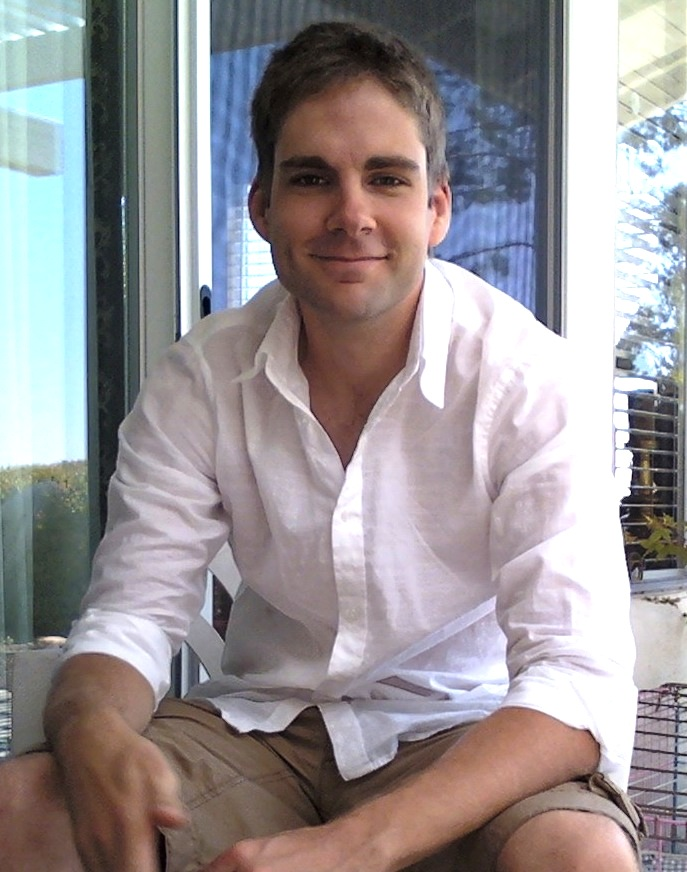

David H. Alexander's page

I recently received my Ph.D. from UCLA's Department of Biomathematics, under the supervision of Kenneth Lange. I currently work for Pacific Biosciences, where I am an algorithms engineer. My continuing research interests are in statistical and population genetics, computational and mathematical statistics, and high-performance scientific computing. My background is in computer science and engineering.
Software:
[ADMIXTURE] [MENDEL] [BitBucket] [GitHub]Publications:
- D. H. Alexander, J. Novembre, and K. Lange. Fast model-based estimation of ancestry in unrelated individuals. Genome Research, 19:1655–1664, 2009.
- H. Zhou, D. H. Alexander, and K. L. Lange. A quasi-Newton acceleration for high-dimensional optimization algorithms. Statistics and Computing, published online 12 December 2009.
- D. H. Alexander and K. Lange. Enhancements to the ADMIXTURE algorithm for individual ancestry estimation. BMC Bioinformatics, 12(1):246, 2011.
- H. Zhou, D. H. Alexander, M. E. Sehl, J. S. Sinsheimer, E. M. Sobel, and K. Lange. Penalized regression for genome-wide association screening of sequence data. In Proceedings of the Pacific Symposium on Biocomputing, 2011.
- D. H. Alexander and K. Lange. Stability Selection for Variable Selection in Genome-Wide Association. Genetic Epidemiology, in press.
Talks:
UNC Statistical Genetics Short Course 2010: Source for all talks available here.
Vita:
[PDF]